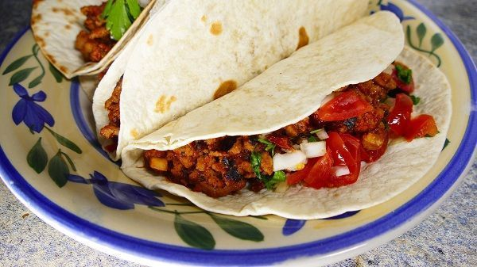

Tacos Mexicanos
Receta original de tacos mexicanos de forma casera

Ingredientes
6 tortillas de trigo o de maíz
350g de carne picada de ternera o de pollo
4 dientes de ajo
500g de tomates
sal y pimienta
aceite
Opcionalmente puedes añadir algo de queso rallado a cada taco
Para el pico de gallo
1 cebolleta pequeña picada
1 jalapeño.
2 tomates medianos
Unas hojas de cilantro
1/2 limón
Elaboración (pasos)
Para comenzar con nuestros tacos mexicanos, picamos los ajos y los cocinamos a fuego muy suave durante 1 minuto. Que no coja color
Añadimos el medio kilo de tomates, ya pelados y troceados y subimos la potencia del fuego. Salpimentamos y cocinamos durante un rato. El tomate soltará agua, debe evaporarse toda que, puede tartar un rato. Una vez evaporada dejamos cocinar a fuego suave mientras removemos constantemente, durante 5 minutos más, para que coja buen sabor
Mientras se evapora el agua de los tomates, preparamos el pico de gallo. El pico de gallo es una salsa que le viene al pelo a los tacos mexicanos. En un bol echamos toda la verdura de esta salsa bien picada. Añadimos el zumo de 1/2 lima o de medio limón y removemos bien. Dejamos reposar
Cuando se haya cocinado un poco el tomate, añadimos la carne picada que hayamos elegido. Echamos su parte de sal y pimienta y cocinamos a fuego fuerte. Con una cuchara de madera, vamos removiendo todo y desmenuzando la carne picada, para que no que queden trozos grandes. De hecho, cuanto más finos queden mejor. Así que mezclamos con el tomate y el ajo, mientras la desmenuzamos y cocinamos la carne
Una vez se haya cocinado, ¡ya está lista! Calentamos una a una las tortillas por sus dos caras en una sartén a fuego medio. Después ponemos encima unas cucharadas de la carne, aderezamos con un poco de pico de gallo, las envolvemos dándole la forma característica de taco ¡Y ya está listo!. Opcionalmente puedes espolvorear también queso rallado por encima
Regresar